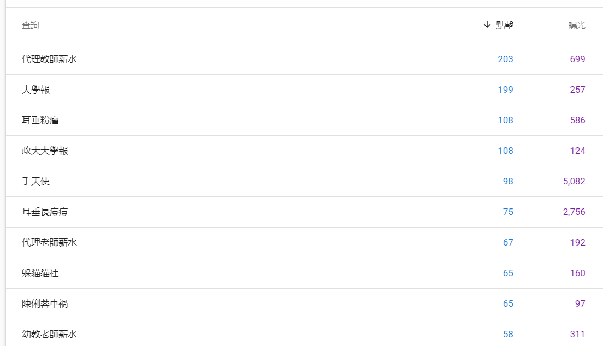
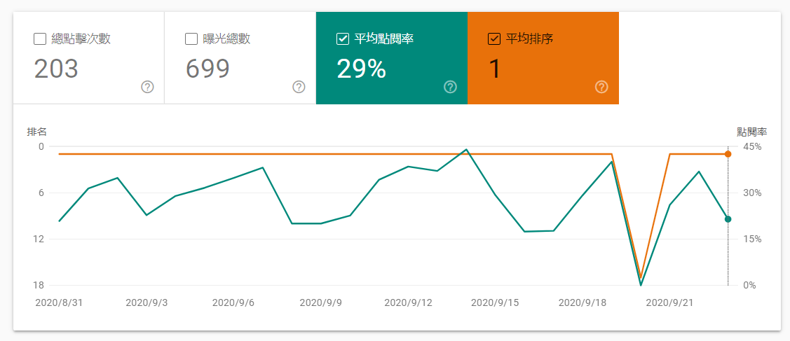

流量從哪裡來 Source Medium 與 Channel
在本單元中，會介紹來源與媒介這一組維度怎麼組合、管道分組把它們合併成哪幾類，以及搜尋帶來的曝光、點擊與點閱率各自能告訴你什麼。
🎯 學習目標
| # | 你會的能力 | 讓你能解釋的真實問題 |
|---|---|---|
| 1 | 區分來源（Source）與媒介（Medium），並看懂 google / organic 這種寫法 |
報表上的 facebook / referral 和 facebook / cpc 差在哪？ |
| 2 | 用曝光、點擊、點閱率、排名四個數字診斷一個搜尋關鍵字的問題出在哪 | 某個關鍵字曝光 5,082 次卻只有 98 次點擊，問題在排名還是在標題？ |
| 3 | 評估一個提高搜尋流量的做法值不值得做 | 為了追熱門關鍵字而寫的稿子，對這個媒體是資產還是負債？ |
🤖 課前 AI 互動（10 分鐘，上課前完成）
請利用 AI 當成你的學習助理，請輸入下列提示
請解釋 Google Analytics 裡 Source（來源）和 Medium（媒介）的差別，並給我十組真實會出現在報表上的
source / medium組合，涵蓋自然搜尋、付費搜尋、社群、推薦連結、電子報和直接進入。每一組後面用一句話說明那是什麼樣的使用者。
然後追一句：
這十組裡面，哪一組是最沒有資訊量的？為什麼分析師看到它通常會皺眉？
把它挑出來的那一組帶到課堂上，等一下我們要看它為什麼是個黑洞。
直接流量的意思不是「使用者背了你的網址」，而是工具找不到來源。App 裡點開的連結、通訊軟體轉傳、PDF 裡的連結、加密頁面跳過來，全部會掉進這一格。看到直接流量很高，第一件事不是慶祝品牌力強，是先懷疑追蹤有沒有做好。
進行方式 ① 來源與媒介是兩個問題
- 來源問「誰把人送來」，媒介問「用哪一種方式送」，兩個合起來才有意義。
- 管道分組（Channels）是工具幫你把幾十種組合合併成七、八類的結果。
- 這一段結束你要能把五個實際的組合各自歸進正確的管道。
來源是名字，媒介是類別
Google 官方定義：來源是流量的出處，例如某個搜尋引擎（google）或某個網域（example.com）；媒介是這個來源的一般類別，例如自然搜尋（organic）、按點擊付費的搜尋（cpc）、網站推薦（referral）。
寫法是 來源 / 媒介。同一個來源可以有很多種媒介：facebook / referral 是有人在臉書貼了連結，facebook / cpc 是你花錢買的廣告。同一個 facebook，兩件完全不同的事。
報表會把這兩個維度拆開又合起來給你
你會在後台看到四種切法：只看來源、只看媒介、看來源／媒介的組合、以及看關鍵字。
先看媒介（我的流量結構是什麼樣），再看來源／媒介組合（結構裡是誰），最後才看關鍵字。順序反過來就會迷路在幾千個關鍵字裡。
管道分組是工具幫你歸的類
管道分組（Channels）把幾十種組合合併成幾個大類：自然搜尋、付費搜尋、多媒體廣告、直接進入、推薦連結、社群、其他。
它的好處是可以直接拿去跟人講；它的代價是分錯的時候你看不出來。落進「其他」的流量通常就是標記沒做好的那些。
直接流量是個黑洞，不是品牌力
(direct) / (none) 代表工具找不到來源。App 內建瀏覽器、通訊軟體轉傳、PDF 連結、掃 QR Code，全部會掉進這一格。
直接流量佔比高，先當成追蹤問題來查，不要先當成好消息。
進行方式 ② 推薦連結分成外部與內部
- 外部推薦有三種來路：緣分、合作、操作，三種的成本與可複製性完全不同。
- 內部連結也在製造流量，而且是你唯一完全控制得了的那一種。
- 這一段結束你要能對自己的網站說出一條可以被操作的外部推薦來路。
外部推薦：緣分、合作、操作
緣分是別人自己引用你——最好但不可控。合作是雙方講好互相導流，可控但要維護關係。操作是主動去別人的地盤放連結，最常見的例子是維基百科的參考文獻。
三種在報表上長得一樣，但只有後兩種可以編進工作計畫。
內部連結是你唯一完全控制的流量
分類頁、標籤頁、文中連結、文末連結，都是把讀者從一頁送到另一頁的機制。
它不會增加使用者數，但會增加每次造訪的頁數。這正是上一節那個判準要處理的東西：它把餅切碎，還是幫使用者找到他真的想看的下一篇。
社群與推薦連結在報表上的界線是模糊的
臉書、LINE 這些平台有時被歸到社群、有時掉進推薦連結，取決於工具認不認得那個網域，以及連結是不是從 App 內開的。
跨期比較社群流量之前，先確認這一期和上一期的歸類方式一樣。
進行方式 ③ 搜尋的四個數字要一起看
- 搜尋表現由四個數字構成：排名、曝光、點擊、點閱率。
- 排名決定曝光，標題決定點閱率，兩者的問題要分開修。
- 這一段結束你要能看一張真實報表，指出問題出在哪一個環節。
排名、曝光、點擊、點閱率各自在說什麼
排名是你的頁面出現在搜尋結果的第幾位，是 SEO 主要的控制對象。曝光是被看到幾次，點擊是被點幾次，點閱率是點擊除以曝光。
因果順序是：內容與排名決定曝光，標題與摘要決定點閱率。這兩段要分開診斷。
一張真實的查詢字詞報表

《大學報》某段期間的查詢字詞。「代理教師薪水」點擊 203、曝光 699；「手天使」點擊 98、曝光 5,082；「耳垂長痘痘」點擊 75、曝光 2,756。
看這張表要橫著看，不要直著看。點擊數最高的那一列，和曝光數最高的那一列，通常不是同一列。
曝光高但點擊低，問題在排名或標題
「手天使」曝光 5,082 卻只有 98 次點擊，點閱率不到 2%。這種形狀只有兩種可能：排名太後面（出現在第二頁，沒人看到），或是標題沒有吸引到搜尋這個詞的人。
分辨的方法就是去看那一列的平均排名。排名在前三名而點閱率仍然很低，那就是標題的問題。
排名第一的關鍵字長什麼樣

同一段期間，「代理教師薪水」總點擊 203、總曝光 699、平均點閱率 29%、平均排名 1。
排名第一、點閱率 29%，這是搜尋能給的最好結果。一個學生媒體在一個具體的問題上打贏了所有人——這就是長尾關鍵字的價值，它不需要你贏過大媒體的品牌，只需要你把那一個問題回答得比別人清楚。
點閱率是容易走火入魔的指標
點閱率可以靠標題拉高，而拉高標題點閱率最有效的方法向來是誇大。
點閱率必須跟後面的行為一起看——點進來的人跳出率多高、停留多久。只看點閱率，你會把整個網站的標題寫成同一種語氣。
進行方式 ④ 怎麼正常地把搜尋流量做大
- 五種做法裡有三種是把餅做大，兩種是原檔作者自己標了「無奈」的。
- 判準沿用整組模組的同一句話：這個做法留下的是資產還是負債。
- 這一段結束你要對「迎合時事」下判斷，並寫出你的理由。
文章結構：讓搜尋引擎看得懂
標題階層、段落小標、內文連結、圖片說明，這些都是在告訴搜尋引擎這一頁在講什麼。
這是成本最低、爭議最少的一項，而且它同時讓人類讀者更好讀。
獨特且優質的內容：這是唯一長期有效的
沒有別人寫過、或是寫得比別人清楚的東西，會自己累積排名。上面那個排名第一的「代理教師薪水」就是這樣來的。
大量內容：有效，但要付出的是產能
多寫確實會增加被搜尋到的機會，因為長尾關鍵字本來就要靠量去覆蓋。代價是每一篇的品質壓力。
拆稿與迎合時事：原檔作者自己標了「無奈」
拆稿讓同一篇內容產生更多頁面；迎合時事讓你搭上短期的搜尋高峰。
兩種都有效，兩種都不留下東西。熱度過了那些頁面就沒有人再進來，而它們會一直留在你的網站上稀釋整體品質。
判準：三個月後這一頁還有人進來嗎
這是判斷搜尋做法的一句話。三個月後還有穩定流量的，是資產；只有發布那三天有流量的，是負債。
搜尋流量是唯一會自己長大的流量。前提是你留下的是別人三個月後還需要的東西。
⚠️ 迷思攔截
| 常見迷思 | 為什麼太簡化 | 攔截 |
|---|---|---|
| 「直接流量高代表品牌強」 | 直接流量是「找不到來源」，App 與轉傳都掉在這裡 | 先查追蹤標記，再談品牌 |
| 「來源和媒介差不多意思」 | 一個是名字一個是類別，facebook / referral 和 facebook / cpc 是兩回事 |
永遠成對讀 |
| 「管道分組是客觀的」 | 它是工具用規則歸的類，歸錯會落到「其他」 | 跨期比較前先確認歸類方式沒變 |
| 「曝光低就是內容不好」 | 曝光由排名決定，排名由內容和連結決定，中間隔了兩層 | 先看排名，再回頭看內容 |
| 「點閱率越高越好」 | 誇大標題可以把它拉滿，代價出現在跳出率 | 一定要跟後面的行為一起看 |
| 「拆稿沒什麼不好，反正讀者會點」 | 它增加頁數但不留下資產，三個月後那些頁沒有人進來 | 用「三個月後還有沒有人進來」判斷 |
先修與後續
- 先修：停留、跳出與離開——不同來源進來的人跳出率差很多，先會讀跳出率才看得懂來源報表。
- 後續：黏著度指標 DAU WAU MAU 與 Frequency——來源決定誰進來，黏著度決定他們會不會再來。
- 平行相關：Session 的定義與四種切法——換來源會切出新的工作階段，那一條規則的理由就是本節的歸因。
- 平行相關：SEO 與 AI 關鍵字分析（W7）——這一節建立的四個數字，到 W7 會拿去做完整的關鍵字地圖。
💬 討論／分享／反思
判例演練
請兩人一組，把下面五種流量各歸進一個管道分組，並說出理由：
- 有人在 Threads 貼了你們的文章連結，讀者從 App 點進來
- 你們花錢買的 Google 關鍵字廣告
- 讀者從電子報點進來，網址帶了
utm_medium=email - 老師在課程網頁上放了你們的連結
- 讀者掃了海報上的 QR Code
第 1 和第 5 題最容易吵起來，把爭論的理由寫下來。
配對分享
請同學兩兩一組，各挑一個你們關注的帳號或網站：
- 說出它最主要的三個流量來源，以及你怎麼判斷的
- 對方要追問「這三個裡面哪一個是你控制得了的」
- 一起想一條可以操作的外部推薦來路
寫下反思
請寫下這一句並補完：
如果我要幫一個新的內容網站帶進第一批讀者，我會先做＿＿＿，因為＿＿＿。
小作業
用一個你有權限的網站或帳號（沒有的話用公開的 Search Console 教學資料），找出三個關鍵字，抄下它們的曝光、點擊、點閱率、排名，並寫出：
- 哪一個關鍵字的問題在排名，哪一個在標題，理由是什麼
- 你會先修哪一個，為什麼
- 三個月後這三個關鍵字還會不會有人搜
學生版｜更新於 2026-09-13 01:45